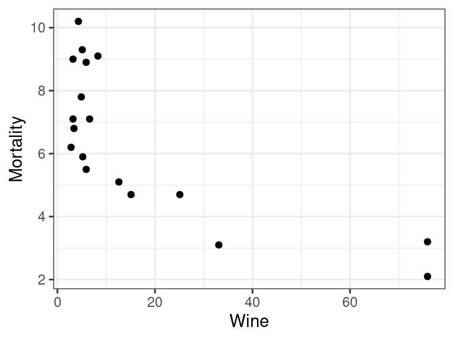
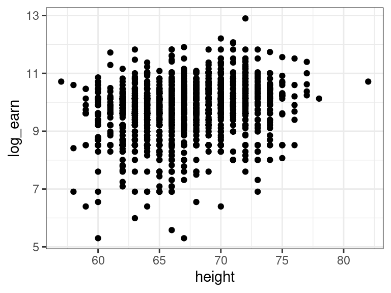

Recall earnings data exploring the relationship between height and earnings.
library(tidyverse)
library(broom)
earnings <- read_csv("https://dcgerard.github.io/stat_415_615/data/earnings.csv")
earnings <- mutate(earnings,
height_mm = height * 25.4,
height_in = height,
height_mi = height / 63360)
tidy(lm(earn ~ height_mm, data = earnings))## # A tibble: 2 × 5
## term estimate std.error statistic p.value
## <chr> <dbl> <dbl> <dbl> <dbl>
## 1 (Intercept) -85027. 8861. -9.60 2.64e-21
## 2 height_mm 62.8 5.23 12.0 5.42e-32tidy(lm(earn ~ height_in, data = earnings))## # A tibble: 2 × 5
## term estimate std.error statistic p.value
## <chr> <dbl> <dbl> <dbl> <dbl>
## 1 (Intercept) -85027. 8861. -9.60 2.64e-21
## 2 height_in 1595. 133. 12.0 5.42e-32tidy(lm(earn ~ height_mi, data = earnings))## # A tibble: 2 × 5
## term estimate std.error statistic p.value
## <chr> <dbl> <dbl> <dbl> <dbl>
## 1 (Intercept) -85027. 8861. -9.60 2.64e-21
## 2 height_mi 101056650. 8419609. 12.0 5.42e-32The estimated regression line depends on the units for \(X\) and \(Y\).
Does this mean that height in miles is a stronger predictor of earnings (since its coefficient estimate is larger?)
By itself, the size of the regression coefficients tells you nothing about the importance of a predictor because this coefficient can change if you change the units of the predictor.
Exercise: When exploring the effect of the percent of of the population with bachelor’s degrees and percent unemployment on percent below the poverty line in the County Demographic Information data, researchers obtained the following output:
cdi <- read_csv("https://dcgerard.github.io/stat_415_615/data/cdi.csv")
cdi <- select(cdi, poverty, bachelors, unemployment)
lmout <- lm(poverty ~ bachelors + unemployment, data = cdi)
tidy(lmout)## # A tibble: 3 × 5
## term estimate std.error statistic p.value
## <chr> <dbl> <dbl> <dbl> <dbl>
## 1 (Intercept) 7.83 1.15 6.80 3.56e-11
## 2 bachelors -0.148 0.0303 -4.88 1.47e- 6
## 3 unemployment 0.608 0.0992 6.13 1.97e- 9Which has a bigger effect on poverty: bachelors or unemployment and why?
You should choose a scale which is in the most interpretable units.
A 1 millimeter difference in height is not a meaningful difference, in terms of the distribution of human heights.
A 1 mile difference in height is unrealistic.
A 1 inch difference in height is more reasonable.
qplot(x = height_in, data = earnings, bins = 20)You can use the standard deviation of the variables to help guide you. If the standard deviation is between 0.5 and 10, then you have a good scale. But this is a rough rule of thumb.
sd(earnings$height_mm)## [1] 97.33sd(earnings$height_in)## [1] 3.832sd(earnings$height_mi)## [1] 6.048e-05What if you are logging variables?
earnings <- mutate(earnings, log_height = log(height))
tidy(lm(earn ~ log_height, data = earnings))## # A tibble: 2 × 5
## term estimate std.error statistic p.value
## <chr> <dbl> <dbl> <dbl> <dbl>
## 1 (Intercept) -425211. 37370. -11.4 5.03e-29
## 2 log_height 106362. 8904. 11.9 1.03e-31Individuals that are 5% taller tend to make \(106362 * \log(1.05) = \$5189\) more on average.
sd(log(earnings$height, base = 10)) # bad## [1] 0.02484sd(log(earnings$height, base = 2)) # bad## [1] 0.08253sd(log(earnings$height, base = 1.05)) # good## [1] 1.173sd(log(earnings$height, base = 1.01)) # good## [1] 5.749Exercise: A study was exploring the association between a country’s wine consumption (liters per person per year) and mortality rate (deaths per 1000 individuals). Researchers found that a power-law relationship was a fine approximation. Based on the below plot alone, choose a good multiplier to interpret the coefficient of a regression of log-mortality on log-wine. Verify your result using our rule of thumb above.
library(Sleuth3)
data("ex0823")
wine <- ex0823
qplot(x = Wine, y = Mortality, data = wine)
Exercise: World record mile time progressions from 1913 to 1999. Data are from Figure A.1 of ROS. Variables include
year: The date (in years) of the new world record.seconds: The new world record (in seconds).mile <- read_csv("https://dcgerard.github.io/stat_415_615/data/mile.csv")
glimpse(mile)## Rows: 32
## Columns: 2
## $ year <dbl> 1913, 1916, 1924, 1932, 1934, 1934, 1938, 1943, 1943, 1943, 19…
## $ seconds <dbl> 254.4, 252.6, 250.4, 249.2, 247.6, 246.8, 246.4, 246.2, 246.2,…The default scale of the \(X\) variable is in years. Is this the best scale? If not, transform the \(X\)-variable to a more appropriate scale, fit a regression of world record on year, then provide an interpretation for the slope.
The idea behind using standard deviations is that roughly (i.e. generally only exactly if normal) 68% of observations will be within 1 standard deviation of the mean. So this difference represents something meaningful.
Above, I suggested to use standard deviations to guide your scaling. Alternatively, we could scale explicitly by standard deviations.
The \(Z\)-score for a variable is its value, minus its mean, divided by its standard deviation. \[ Z_i = \frac{X_i - \bar{X}}{s_x} \]
\(Z_i\) is now in units of standard deviations of \(X_i\) from its mean.
Example: For the heights and earnings dataset, let’s create \(Z\)-scores.
earnings <- mutate(earnings,
height_z = (height - mean(height)) / sd(height),
earn_z = (earn - mean(earn)) / sd(earn))
glimpse(select(earnings, earn_z, height_z))## Rows: 1,816
## Columns: 2
## $ earn_z <dbl> 1.28053, 1.72435, 0.39290, 0.17099, 1.28053, 1.81312, 1.32492…
## $ height_z <dbl> 1.9393, -0.1484, -0.6704, -0.4094, -0.9314, 0.3735, -0.9314, …Centering and scaling does not change the underlying information.
qplot(x = height, y = earn, data = earnings) + geom_smooth(method = "lm", se = FALSE)## `geom_smooth()` using formula 'y ~ x'qplot(x = height_z, y = earn_z, data = earnings) + geom_smooth(method = "lm", se = FALSE)## `geom_smooth()` using formula 'y ~ x'But this will make interpretation a little easier.
lm_earn_z <- lm(earn_z ~ height_z, data = earnings)
tidy(lm_earn_z, conf.int = TRUE)## # A tibble: 2 × 7
## term estimate std.error statistic p.value conf.low conf.high
## <chr> <dbl> <dbl> <dbl> <dbl> <dbl> <dbl>
## 1 (Intercept) 4.57e-16 0.0226 2.02e-14 1.00e+ 0 -0.0443 0.0443
## 2 height_z 2.71e- 1 0.0226 1.20e+ 1 5.42e-32 0.227 0.316So a 1 standard deviation difference in height corresponds to 0.27 standard deviations higher earnings.
If you do this to all variables in your model, you can use the following multiple regression model: \[ Y_i = \beta_0^* + \beta_1^*Z_{i1} + \beta_2^* Z_{i2} + \cdots + \beta_{p-1}^*Z_{i, p-1} + \epsilon_i \]
If we run a linear regression under this model, then the interpretation of coefficient \(\beta_i^*\) is: > Individuals that are 1 standard deviation larger in X_i tend to have \(\beta_1^*\) higher \(Y_i\) on average, adjusting for all other predictors in our model.
Example: XYZ Fit a multiple linear regression model, then scale. Provide interpretation in terms of model.
Note: If \(X_i^* = \frac{X_i - a}{b}\), then \(\beta_i^* = b\beta_i\) and \(\hat{\beta}_i^* = b\hat{\beta}_i\).
Exercise: XYZ Let them fit both with and without \(Z\)-score scaling. Compare coefficients. Provide interpretation using both models. See if the coefficients of other variables change when we scale a different variable.
Sometimes, no data points exist that are one unit larger \(X_1\) but the same \(X_2\), because of multicollinearity. Thus, this interpretation is suspect.
Multicollinearity therefore also messes with interpretation.
It is always a good idea to compare the effect sizes to the residual standard error.
Example: Recall the earnings data. Let’s read it in and fit a model for log-earnings on height:
library(tidyverse)
earnings <- read_csv("https://dcgerard.github.io/stat_415_615/data/earnings.csv")
earnings <- mutate(earnings, log_earn = log(earn))
earnings <- filter(earnings, is.finite(log_earn))
qplot(x = height, y = log_earn, data = earnings)
lm_earn <- lm(log_earn ~ height, data = earnings)library(broom)
tidy(lm_earn)## # A tibble: 2 × 5
## term estimate std.error statistic p.value
## <chr> <dbl> <dbl> <dbl> <dbl>
## 1 (Intercept) 5.91 0.376 15.7 6.70e-52
## 2 height 0.0570 0.00562 10.1 1.65e-23The \(p\)-value is tiny. So is this a huge effect? Not really. Let’s discuss.
Individuals that are a whole foot taller earn about \(0.05704 \times 12 = 0.6845\) log-dollars more. This corresponds to about twice as much money ($e^0.6845 = 1.98). This seems large. However, let’s look at the residual standard deviation.
glance(lm_earn)## # A tibble: 1 × 12
## r.squared adj.r.squared sigma statistic p.value df logLik AIC BIC
## <dbl> <dbl> <dbl> <dbl> <dbl> <dbl> <dbl> <dbl> <dbl>
## 1 0.0595 0.0590 0.877 103. 1.65e-23 1 -2097. 4200. 4216.
## # … with 3 more variables: deviance <dbl>, df.residual <int>, nobs <int>The residual SD is 0.8772. This is the average variability about the regression line and is larger even when comparing folks that are a full foot different in height.
If we compare prediction intervals between a 5’2’’ individual and a 6’2’’ individual (ignoring the appropriateness of the normal model for now), we have
predict(object = lm_earn,
newdata = data.frame(height = c(5.2 * 12, 6.2 * 12)),
interval = "prediction") %>%
exp()## fit lwr upr
## 1 12938 2312 72387
## 2 25652 4579 143718So it is true that the taller individual is expected to make twice as much money ($12,938 versus $25,652), but the range of individuals at each level is huge ($2312 to $72,387 and $4579 to $143,718). And this is on the larger side of comparisons between individuals (most individuals are less than a foot different).